| Información del documento |
|---|
| Versión: 1 |
| Autor: Rodrigo Castro |
| Fecha de creación: 07/12/21 |
| Fecha de Actualización 07/12/21 |
Borrar información de manera segura (también conocido como data destruction, secure erase, secure data wiping, entre otros)
Para hacer irrecuperable los datos se existen tres métodos
Degaussing: consiste en desmagnetizar los medios, este metodo solo es efectivo para dispositivos que almacenan los datos de forma magnética como antiguos dispositivos como diskette o HDD, pero no funciona con las unidades flash o los SSD, causa que los dispositivos queden inservibles y tiene un impacto en el medio ambiente.
Destrucción física: consiste en destruir físicamente el medio que contiene los datos, haciendo inutilizable el medio o la recuperación de los datos, sin embargo deja el medio inutilizable y tiene un impacto en el medio ambiente.
Mediante software: Consiste en usar software que realiza un proceso de eliminación que va más allá de la básica eliminación de archivos, donde se eliminan los punteros de los datos sin eliminar los datos. Es la opción sugerida en este documento
Se recomienda que el software para la eliminación de datos debé permitir la selección de un estándar específico y verifique que el método de sobrescritura fuera exitoso y haya eliminado datos en todo el dispositivo. Se recomienda el uso de SharedOS
ShredOS es una distribución de Linux liviana que se puede usar desde una USB (BIOS o UEFI) con el único propósito de borrar de forma segura todo el contenido de discos utilizando el programa nwipe, ShredOS siempre proporcionará el último nwipe en un kernel de Linux actualizado para que sea compatible con hardware moderno admitiendo procesadores de 32 bits o 64 bits.
Documentación oficial de SharedOS
Una vez descargada la imagen de SharedOS, utilizaremos el programa balenaEtcher que esta disponible para Windows, Linux y macOS se puede descargar desde el siguiente enlace.
insertamos el dispositivo USB en el que se instalara SharedOS y ejecutaremos balenaEtcher.
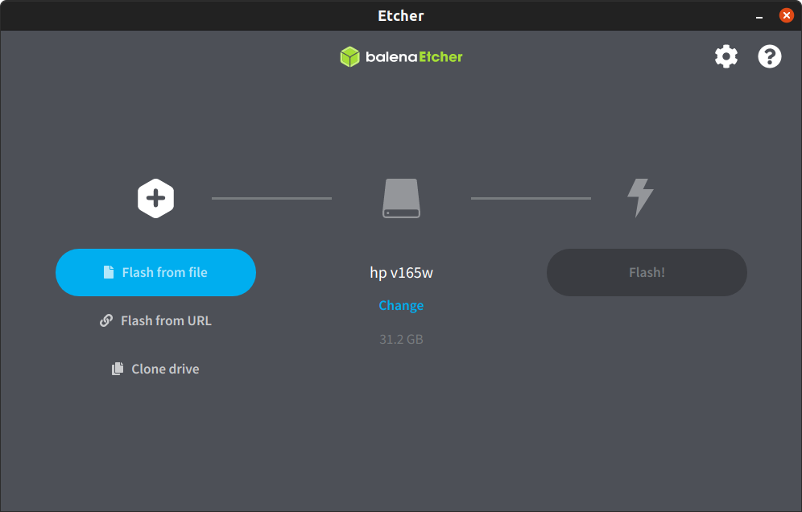
Seleccionamos la opción Flash from file
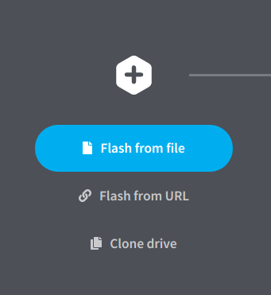
Seleccionamos el archivo de imagen de SharedOS
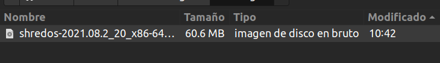
Nota: Asegúrese de descargar el archivo de imagen correcto, el archivo .img es recomendable para generar en una live USB y el archivo .iso es recomendable apra quemar en un live CD
Verificamos el dispositivo USB a utilizar, de no ser el que necesitamos podemos cambiarlo pulsando sobre la opción Change
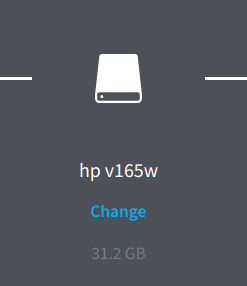
Presionamos sobre el botón Flash!
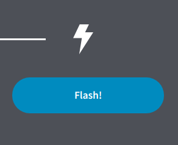
Esperamos a que termine el proceso
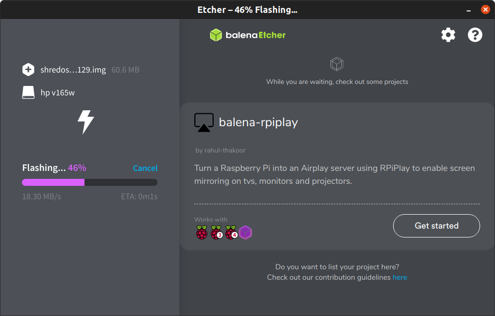
Una vez terminado el proceso retiramos el dispositivo USB.
Apagamos el equipo donde usaremos ShareOS para eliminar archivos, e iniciamos el sistema desde el dispositivo USB conectado
Nota: En caso de sistemas operativos Windows en versiones 8, 10 y 11 dado a que el sistema en si no se apaga para dar una sensación de ser mas rapido, evita que los discos se puedan montar por lo que tenemos dos opciones
Abrir CMD como administrador y ejecutar el comando powercfg -h off
Abrir CMD como administrador y ejecutar el comando shutdown -r -fw -t 0
Al iniciar veremos la siguiente pantalla
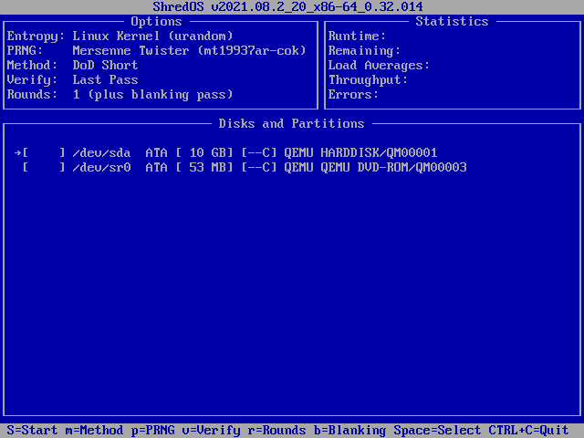
Presionamos la tecla m para seleccionar el metodo de eliminación.
Se sugiere uasr el estándar DoD 5220.22M
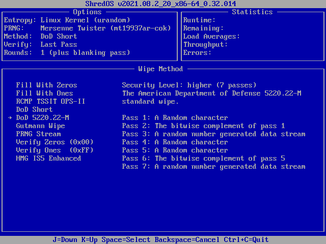
Seleccionamos la unidad o unidades de disco en las que deseamos eliminar los datos y presionamos la tecla espacio.
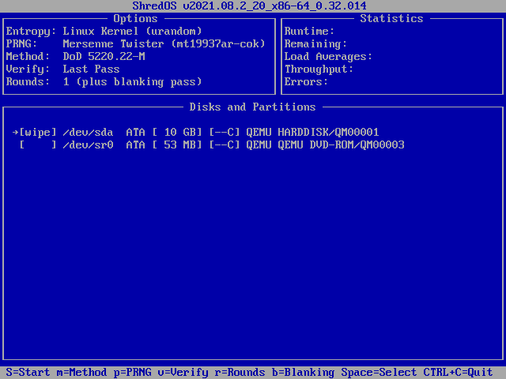
Una vez seleccionadas las unidades presionar la tecla shift + s, el proceso iniciara
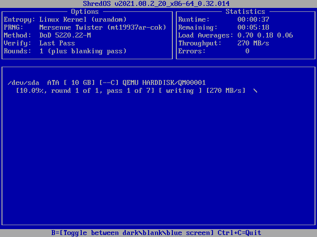
Dependera del tamaño del disco el tiempo que tardara en eliminar los datos.
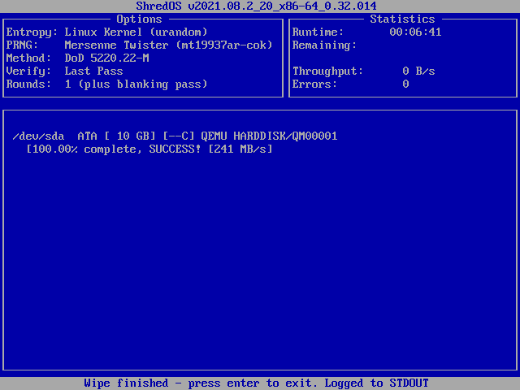
Una vez terminado presionamos enter y nos mostrara un resumen del procedimiento realizado.
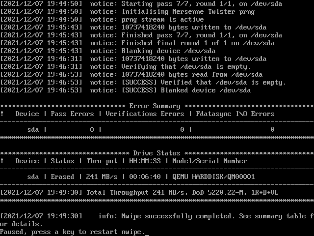
Copiamos este reporte para incluirlo en un informe técnico.
Nota: el reporte se genera una vez terminado el proceso y se debe copiar antes de salir del sistema.
Podemos insertar una usb para copiar el reporte, utilizamos el comando para lostar dispositivos conectados
lslbk
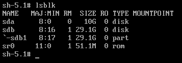
Identificamos el dispositivo, en este caso es el sdb1 creamos un directorio para montar el volumen con el comando
mkdir /media/usb
Montamos el volumen con el comando
mount /dev/sdb1 /media/usb
Listamos el contenido del directorio de ShredOS para ver los archivos con el comando
ls
Veremos un archivo con la estructura nwipe_log_<fecha>-<hora>
Nota: Si hemos realizado varios procesos se crearan varios archivos nwipe_log_ variando la fecha o la hora
Procedemos a copiar el reporte o reportes con el comando
cp /nwipe_log* /media/usb
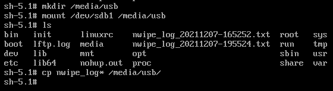
Verificamos que los archivos esten en el dispositivo USB con el comando
ls /media/usb/
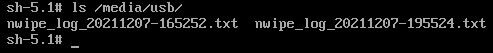
Desmontamos el dispositivo USB con el comando
cd /media/;umount usb
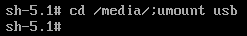
Desconectamos el dispositivo usb con los reportes y finalizamos el sistema, ahora el disco se encuentra libre de datos y no es posible recuperar información.